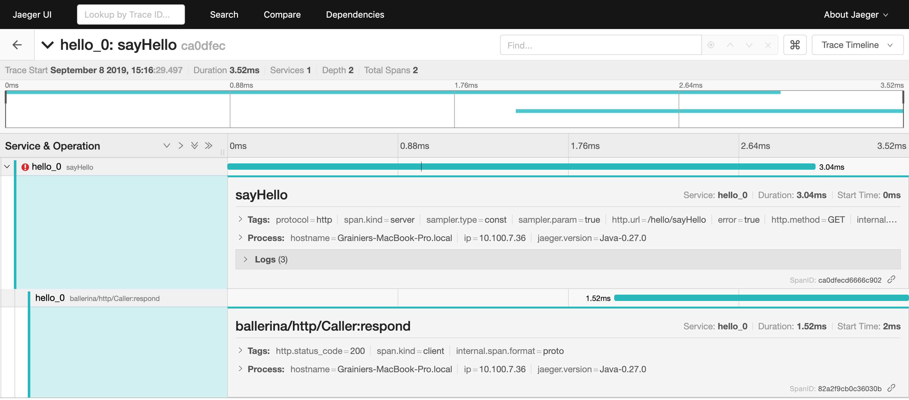
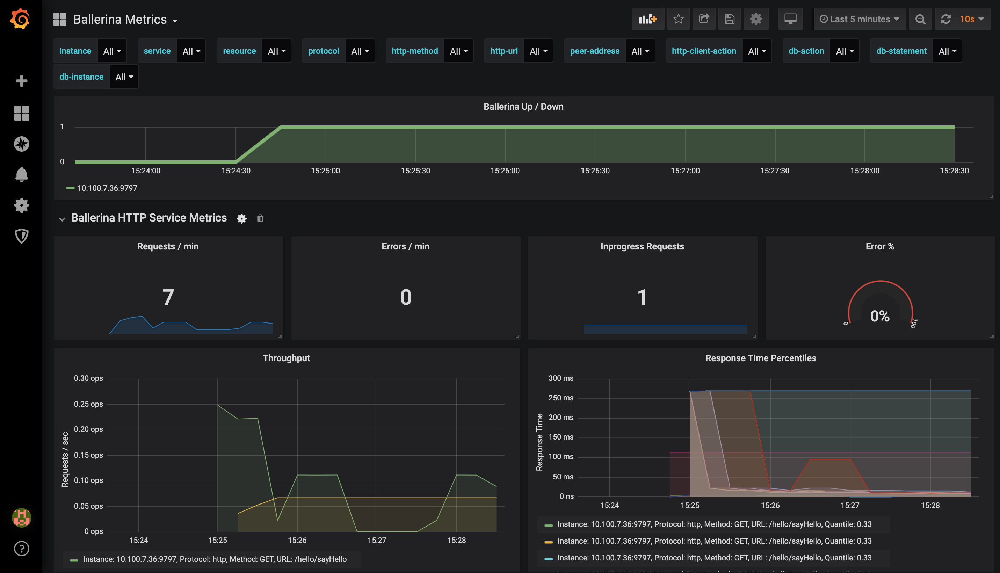
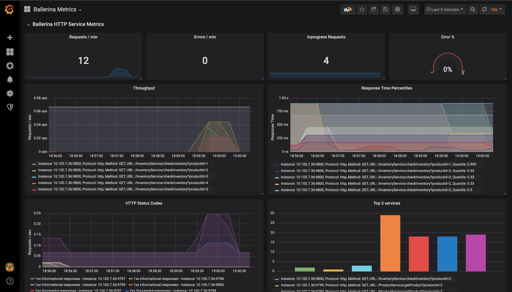

Observing Ballerina Code
Observability is a measure of how well internal states of a system can be inferred from knowledge of its external outputs.
- Providing Observability in Ballerina
- Observing a Ballerina Service
- Step 1 - Setting Up the Prerequisites
- Step 2 - Installing and Configuring the External Systems
- Step 3 - Creating a Hello World Ballerina Service
- Step 4 - Observing the Hello World Ballerina Service
- Step 5 - Sending Few Requests
- Step 6 - Viewing Tracing and Metrics in the Dashboard
- Step 7 - Visualizing the Logs
- Monitoring Metrics
- Distributed Tracing
- Distributed Logging
Providing Observability in Ballerina
Monitoring, logging, and distributed tracing are key methods that reveal the internal state of the system to provide observability. Ballerina becomes fully observable by exposing itself via these three methods to various external systems allowing to monitor metrics such as request count and response time statistics, analyze logs, and perform distributed tracing.
HTTP/HTTPS based Ballerina services and any client connectors are observable by default. HTTP/HTTPS and SQL client connectors use semantic tags to make tracing and metrics monitoring more informative.
This guide focuses on enabling Ballerina service observability with some of its default supported systems. Prometheus and Grafana are used for metrics monitoring, and Jaeger is used for distributed tracing. Ballerina logs can be fed to any external log monitoring system like Elastic Stack to perform log monitoring and analysis.
Observing a Ballerina Service
Follow the steps below to observe a sample Ballerina service.
Step 1 - Setting Up the Prerequisites
Make sure you have already installed Docker to set up external products such as Jaeger, Prometheus, etc. You can follow Docker documentation to install Docker.
Step 2 - Installing and Configuring the External Systems
- Setup Prometheus for collecting metrics information by following section on Setting up Prometheus
- Setup Grafana to visualize metrics by following section on Setting up Grafana
- Setup Jaeger analyze tracing as mentioned in section Setting up Jaeger
- Setup Elastic Stack only if you are interested in analysing logs by following section on Setting up Elastic Stack
Step 3 - Creating a Hello World Ballerina Service
Create a Service as shown below and save it as hello_world_service.bal.
import ballerina/http;
import ballerina/log;
service hello on new http:Listener(9090) {
resource function sayHello (http:Caller caller, http:Request req) returns error? {
log:printInfo("This is a test Info log");
log:printError("This is a test Error log");
log:printWarn("This is a test Warn log");
http:Response res = new;
res.setPayload("Hello, World!");
check caller->respond(res);
}
}
Step 4 - Observing the Hello World Ballerina Service
Observability is disabled by default and can be enabled by using the --b7a.observability.enabled=true flag or updating the configurations.
When Ballerina observability is enabled, Ballerina runtime exposes internal metrics via an HTTP endpoint for metrics monitoring and tracers will be published to Jaeger. Prometheus should be configured to scrape metrics from the metrics HTTP endpoint in Ballerina.
Ballerina logs are logged on to the console. Therefore, the logs need to be redirected to a file, which can then be pushed to Elastic Stack to perform the log analysis.
Starting the Service Using a Flag
The Ballerina service is observable with default settings when the --b7a.observability.enabled=true flag is used along with the Ballerina
run command to start the service.
This lets you collect the distributed tracing information with Jaeger and metrics information with Prometheus.
$ ballerina run hello_world_service.bal --b7a.observability.enabled=true
[ballerina/http] started HTTP/WS listener 0.0.0.0:9797
ballerina: started Prometheus HTTP listener 0.0.0.0:9797
ballerina: started publishing tracers to Jaeger on localhost:5775
[ballerina/http] started HTTP/WS listener 0.0.0.0:9090
Redirect the standard output to a file if you want to monitor logs.
For example:
$ nohup ballerina run hello_world_service.bal --b7a.observability.enabled=true > ballerina.log &
Starting the Service Using a Configuration File
Observability of Ballerina service can also be enabled from the configuration. Create a configuration file such as ballerina.conf and add configuration below that starts metrics monitoring and distributed tracing with default
settings.
[b7a.observability.metrics]
# Flag to enable Metrics
enabled=true
[b7a.observability.tracing]
# Flag to enable Tracing
enabled=true
The created configuration file can be passed to the Ballerina program with --b7a.config.file option along with
the path of the configuration file.
$ ballerina run hello_world_service.bal --b7a.config.file=<path-to-conf>/ballerina.conf
[ballerina/http] started HTTP/WS listener 0.0.0.0:9797
ballerina: started Prometheus HTTP listener 0.0.0.0:9797
ballerina: started publishing tracers to Jaeger on localhost:5775
[ballerina/http] started HTTP/WS listener 0.0.0.0:9090
Redirect the standard output to a file if you want to monitor logs.
For example:
$ nohup ballerina run hello_world_service.bal --b7a.config.file=<path-to-conf>/ballerina.conf > ballerina.log &
Step 5 - Sending Few Requests
Send few requests to http://localhost:9090/hello/sayHello
Example cURL command:
$ curl http://localhost:9090/hello/sayHello
Step 6 - Viewing Tracing and Metrics in the Dashboard
View the tracing information on Jaeger via http://localhost:16686/ and view metrics information from the Grafana dashboard on http://localhost:3000/.
Sample view of Jaeger dashboard for hello_world_service.bal is shown below. 
Sample view of Grafana dashboard for hello_world_service.bal is shown below. 
Step 7 - Visualizing the Logs
If you have configured log analytics, view the logs in Kibana via http://localhost:5601
Monitoring Metrics
Metrics help to monitor the runtime behavior of a service. Therefore, metrics are a vital part of monitoring Ballerina services. However, metrics are not the same as analytics. For example, you should not use metrics to do something like per-request billing. Metrics are used to measure what Ballerina service does at runtime to make better decisions using the numbers. The code generates business value when it continuously runs in production. Therefore, it is imperative to continuously measure the code in production.
Metrics, by default, supports Prometheus. In order to support Prometheus, an HTTP endpoint starts with the context
of /metrics in default port 9797 when starting the Ballerina service.
Configuring Advanced Metrics for Ballerina
This section focuses on the Ballerina configurations that are available for metrics monitoring with Prometheus, and the sample configuration is provided below.
[b7a.observability.metrics]
enabled=true
reporter="prometheus"
[b7a.observability.metrics.prometheus]
port=9797
host="0.0.0.0"
The descriptions of each configuration above are provided below with possible alternate options.
| Configuration Key | Description | Default Value | Possible Values |
|---|---|---|---|
| b7a.observability.metrics. enabled | Whether metrics monitoring is enabled (true) or disabled (false) | false | true or false |
| b7a.observability.metrics. reporter | Reporter name that reports the collected Metrics to the remote metrics server. This is only required to be modified if a custom reporter is implemented and needs to be used. | prometheus | prometheus or if any custom implementation, then name of the reporter. |
| b7a.observability.metrics. prometheus.port | The value of the port to which the service /metrics will bind. This service will be used by Prometheus to scrape the information of the Ballerina service. | 9797 | Any suitable value for port 0 - 0 - 65535. However, within that range, ports 0 - 1023 are generally reserved for specific purposes, therefore it is advisable to select a port without that range. |
| b7a.observability.metrics. prometheus.host | The name of the host in which the service /metrics will bind to. This service will be used by Prometheus to scrape the information of the Ballerina service. | 0.0.0.0 | IP or Hostname or 0.0.0.0 of the node in which the Ballerina service is running. |
Setting Up the External Systems for Metrics
There are mainly two systems involved in collecting and visualizing the metrics. Prometheus is used to collect the metrics from the Ballerina service and Grafana can connect to Prometheus and visualize the metrics in the dashboard.
Setting Up Prometheus
Prometheus is used as the monitoring system, which pulls out the metrics collected from the Ballerina service /metrics. This section focuses on the quick installation of Prometheus with Docker, and configure it to collect metrics from Ballerina service with default configurations. Below provided steps needs to be followed to configure Prometheus. There are many other ways to install the Prometheus and you can find possible options from installation guide.
-
Create a
prometheus.ymlfile in the/tmp/directory. -
Add the following content to
/tmp/prometheus.yml.
global:
scrape_interval: 15s
evaluation_interval: 15s
scrape_configs:
- job_name: 'prometheus'
static_configs:
- targets: ['a.b.c.d:9797']
Here the targets 'a.b.c.d:9797' should contain the host and port of the /metrics service thats exposed from
Ballerina for metrics collection. Add the IP of the host in which the Ballerina service is running as a.b.c.d and its
port (default 9797).
For more information, go to the Prometheus Documentation.
- Start the Prometheus server in a Docker container with the command below.
$ docker run -p 19090:9090 -v /tmp/prometheus.yml:/etc/prometheus/prometheus.yml prom/prometheus
- Go to http://localhost:19090/ and check whether you can see the Prometheus graph. Ballerina metrics should appear in Prometheus graphs metrics list when Ballerina service is started.
Setting Up Grafana
Lets use Grafana to visualize metrics in a dashboard. For this, we need to install Grafana, and configure Prometheus as a data source. Follow the steps below to configure Grafana.
- Start Grafana as a Docker container with the command below.
$ docker run -d --name=grafana -p 3000:3000 grafana/grafana
For more information, go to Grafana in Docker Hub.
-
Go to http://localhost:3000/ to access the Grafana dashboard running on Docker.
-
Log in to the dashboard with the default user, username:
adminand password:admin -
Add Prometheus as a data source with
Browseraccess configuration as provided below.
- Import the Grafana dashboard designed to visualize Ballerina metrics from https://grafana.com/dashboards/5841. This dashboard consists of service and client invocation level metrics in near real-time view.
Ballerina HTTP Service Metrics Dashboard Panel will be as below. 
Ballerina HTTP Client Metrics Dashboard Panel will be as below.

Ballerina SQL Client Metrics Dashboard Panel will be as below.
Distributed Tracing
Tracing provides information regarding the roundtrip of a service invocation based on the concept of spans, which are structured in a hierarchy based on the cause and effect concept. Tracers propagate across several services that can be deployed in several nodes, depicting a high-level view of interconnections among services as well, hence coining the term distributed tracing.
A span is a logical unit of work, which encapsulates a start and end time as well as metadata to give more meaning to the unit of work being completed. For example, a span representing a client call to an HTTP endpoint would give the user the latency of the client call and metadata like the HTTP URL being called and HTTP method used. If the span represents an SQL client call, the metadata would include the query being executed.
Tracing gives the user a high-level view of how a single service invocation is processed across several distributed microservices.
- Identify service bottlenecks - The user can monitor the latencies and identify when a service invocation slows down, pinpoint where the slowing down happens (by looking at the span latencies) and take action to improve the latency.
- Error identification - If an error occurs during the service invocation, it will show up in the list of tracers. The user can easily identify where the error occurred and information of the error will be attached to the relevant span as metadata.
Ballerina supports OpenTracing standards by default. This means that Ballerina services can be traced using OpenTracing implementations like Jaeger, and Zipkin. Jaeger is the default tracer of Ballerina.
Semantic tags used by Ballerina also follow the semantic conventions defined in OpenTracing specification.
Configuring Advanced Tracing for Ballerina
Tracing can be enabled in Ballerina with --b7a.observability.enabled=true flag as mentioned in the Getting Started section, as well as configuration option. This section mainly focuses on the configuration options with description and possible values.
The sample configuration that enables tracing, and uses Jaeger as the sample tracer as provided below.
[b7a.observability.tracing]
enabled=true
name="jaeger"
The table below provides the descriptions of each configuration option and possible values that can be assigned.
| Configuration Key | Description | Default Value | Possible Values |
|---|---|---|---|
| b7a.observability.tracing.enabled | Whether tracing is enabled (true) or disabled (false) | false | true or false |
| b7a.observability.tracing.name | Tracer name which implements tracer interface. | jaeger | jaeger or zipkin |
Using the Jaeger Client
Jaeger is the default tracer supported by Ballerina. Below is the sample configuration options that are available in the Jaeger.
[b7a.observability.tracing]
enabled=true
name="jaeger"
[b7a.observability.tracing.jaeger.sampler]
type="const"
param=1.0
[b7a.observability.tracing.jaeger.reporter]
hostname="localhost"
port=5775
[b7a.observability.tracing.jaeger.reporter.flush.interval]
ms=2000
[b7a.observability.tracing.jaeger.reporter.max.buffer]
spans=1000
The below table provides the descriptions of each configuration option and possible values that can be assigned.
| Configuration Key | Description | Default Value | Possible Values |
|---|---|---|---|
| b7a.observability.tracing. jaeger.reporter.hostname | Hostname of the Jaeger server | localhost | IP or hostname of the Jaeger server. If it is running on the same node as Ballerina, it can be localhost. |
| b7a.observability.tracing. jaeger.reporter.port | Port of the Jaeger server | 5775 | The port to which the Jaeger server is listening. |
| b7a.observability.tracing. jaeger.sampler.type | Type of the sampling methods used in the Jaeger tracer. | const | const, probabilistic, or ratelimiting. |
| b7a.observability.tracing. jaeger.sampler.param | It is a floating value. Based on the sampler type, the effect of the sampler param varies | 1.0 | For const 0 (no sampling) or 1 (sample all spans), for probabilistic 0.0 to 1.0, for ratelimiting any positive integer (rate per second). |
| b7a.observability.tracing. jaeger.reporter.flush.interval.ms | Jaeger client will be sending the spans to the server at this interval. | 2000 | Any positive integer value. |
| b7a.observability.tracing. jaeger.reporter.max.buffer.spans | Queue size of the Jaeger client. | 2000 | Any positive integer value. |
Using the Zipkin Client
The tracing of Ballerina service can be done via Zipkin as well, but the required dependencies are not included in default Ballerina distribution. Follow the steps below to add the required dependencies to the Ballerina distribution.
-
Go to ballerina-observability and clone the GitHub repository in any preferred location.
-
Make sure you have installed Apache Maven.
-
Open the command line and build the repository by using Apache Maven with the command below while being in the root project directory
ballerina-observability.
$ mvn clean install
-
Go to the path -
ballerina-observability/tracing-extensions/modules/ballerina-zipkin-extension/target/and extractdistribution.zip. -
Copy all the JAR files inside the
distribution.zipto bre/lib directory in the Ballerina distribution. -
Add following configuration to the
Ballerina.tomlof your module.
[platform]
target = "java8"
[[platform.libraries]]
artifactId = "ballerina-zipkin-extension"
version = "1.0.0-rc1-SNAPSHOT"
path = "/<absolute_path_to>/ballerina-zipkin-extension-1.0.0-rc1-SNAPSHOT.jar"
groupId = "org.ballerinalang"
modules = ["yourModuleName"]
[[platform.libraries]]
artifactId = "brave-opentracing"
version = "4.17.1"
path = "/<absolute_path_to>/brave-4.17.1.jar"
groupId = "io.opentracing.brave"
modules = ["yourModuleName"]
[[platform.libraries]]
artifactId = "brave"
version = "0.29.0"
path = "/<absolute_path_to>/brave-opentracing-0.29.0.jar"
groupId = "io.zipkin.brave"
modules = ["yourModuleName"]
[[platform.libraries]]
artifactId = "zipkin-reporter"
version = "2.6.1"
path = "/<absolute_path_to>/zipkin-2.6.1.jar"
groupId = "io.zipkin.reporter2"
modules = ["yourModuleName"]
[[platform.libraries]]
artifactId = "zipkin"
version = "2.5.0"
path = "/<absolute_path_to>/zipkin-reporter-2.5.0.jar"
groupId = "io.zipkin.zipkin2"
modules = ["yourModuleName"]
[[platform.libraries]]
artifactId = "zipkin-sender-okhttp3"
version = "2.5.0"
path = "/<absolute_path_to>/zipkin-sender-okhttp3-2.5.0.jar"
groupId = "io.zipkin.reporter2"
modules = ["yourModuleName"]
[[platform.libraries]]
artifactId = "zipkin-sender-urlconnection"
version = "2.5.0"
path = "/<absolute_path_to>/zipkin-sender-urlconnection-2.5.0.jar"
groupId = "io.zipkin.reporter2"
modules = ["yourModuleName"]
[[platform.libraries]]
artifactId = "kotlin-stdlib"
version = "1.3.31"
path = "/<absolute_path_to>/kotlin-stdlib-1.3.31.jar"
groupId = "org.jetbrains.kotlin"
modules = ["yourModuleName"]
- Change the following configuration name to Zipkin. This ensures that all tracers are sent to Zipkin instead of the default Jaeger tracer.
[b7a.observability.tracing]
name="zipkin"
- The following configuration is a sample configuration option available for Zipkin tracer.
[b7a.observability.tracing.zipkin.reporter]
hostname="localhost"
port=9411
[b7a.observability.tracing.zipkin.reporter.api]
context="/api/v2/spans"
version="v2"
[b7a.observability.tracing.zipkin.reporter.compression]
enabled=true
The table below provides the descriptions of each configuration option and possible values that can be assigned.
| Configuration Key | Description | Default Value | Possible Values |
|---|---|---|---|
| b7a.observability.tracing.zipkin. reporter.hostname | Hostname of the Zipkin server | localhost | IP or hostname of the Zipkin server. If it is running on the same node as Ballerina, it can be localhost. |
| b7a.observability.tracing.zipkin. reporter.port | Port of the Zipkin server | 9411 | The port that the Zipkin server is listening to. |
| b7a.observability.tracing.zipkin. reporter.api.context | API context of the Zipkin server | /api/v2/spans |
The API context of the Zipkin API. For V1 API, the context will be /api/v1/spans, and for V2 API, the context will be /api/v2/spans for default Zipkin server. |
| b7a.observability.tracing.zipkin. reporter.api.version | API version of the Zipkin API | v2 | v1 or v2. |
| b7a.observability.tracing.zipkin. reporter.compression.enabled | Enable the compression for the spans request | true | true or false. |
Setting Up the External Systems for Tracing
Ballerina by default supports Jaerger and Zipkin for distributed tracing. This section focuses on configuring the Jaeger and Zipkin with Dockers as a quick installation.
Setting Up the Jaeger Server
Jaeger is the default distributed tracing system that is supported. There are many possible ways to deploy Jaeger and you can find more information on this link. Here we focus on all in one deployment with Docker.
- Install Jaeger via Docker and start the Docker container by executing the command below.
$ docker run -d -p5775:5775/udp -p6831:6831/udp -p6832:6832/udp -p5778:5778 -p16686:16686 -p14268:14268 jaegertracing/all-in-one:latest
- Go to http://localhost:16686 and load the web UI of the Jaeger to make sure it is functioning properly.
The image below is the sample tracing information you can see from Jaeger.
Setting Up the Zipkin Server
Similar to Jaeger, Zipkin is another distributed tracing system that is supported by the Ballerina. There are many different configurations and deployment exist for Zipkin, please go to link for more information. Here we focus on all in one deployment with Docker.
- Install Zipkin via Docker and start the Docker container by executing following command.
$ docker run -d -p 9411:9411 openzipkin/zipkin
- Go to http://localhost:9411/zipkin/ and load the web UI of the Zipkin to make sure it is functioning properly. The sample Zipkin dashboard for the hello world sample in the Quick Start is shown below.

Distributed Logging
Ballerina distributed logging and analysis is supported by Elastic Stack. Ballerina has a log module for logging in to the console. In order to monitor the logs, the Ballerina standard output needs to be redirected to a file.
This can be done by running the Ballerina service as below.
$ nohup ballerina run hello_world_service.bal > ballerina.log &
You can view the logs with command below.
$ tail -f ~/wso2-ballerina/workspace/ballerina.log
Setting Up the External Systems for Log Analytics
Setting Up Elastic Stack
The elastic stack comprises of the following components.
- Beats - Multiple agents that ship data to Logstash or Elasticsearch. In our context, Filebeat will ship the Ballerina logs to Logstash. Filebeat should be a container running on the same host as the Ballerina service. This is so that the log file (ballerina.log) can be mounted to the Filebeat container.
- Logstash - Used to process and structure the log files received from Filebeat and send them to Elasticsearch.
- Elasticsearch - Storage and indexing of the logs received by Logstash.
- Kibana - Visualizes the data stored in Elasticsearch
Elasticsearch and Kibana are provided as Cloud Services Alternatively, Docker containers can be used to set up Elasticsearch and Kibana as well.
- Download the Docker images using the following commands.
# Elasticsearch Image
$ docker pull docker.elastic.co/elasticsearch/elasticsearch:6.5.1
# Kibana Image
$ docker pull docker.elastic.co/kibana/kibana:6.5.1
# Filebeat Image
$ docker pull docker.elastic.co/beats/filebeat:6.5.1
# Logstash Image
$ docker pull docker.elastic.co/logstash/logstash:6.5.1
- Start Elasticsearch and Kibana containers by executing the following commands.
$ docker run -p 9200:9200 -p 9300:9300 -it -h elasticsearch --name elasticsearch docker.elastic.co/elasticsearch/elasticsearch:6.5.1
$ docker run -p 5601:5601 -h kibana --name kibana --link elasticsearch:elasticsearch docker.elastic.co/kibana/kibana:6.5.1
If you run on Linux you may have to increase the vm.max_map_count for the Elasticsearch container to start.
Execute the following command to do that.
$ sudo sysctl -w vm.max_map_count=262144
- Create a
logstash.conffile in the/tmp/pipeline/directory and include the following content in the file.
input {
beats {
port => 5044
}
}
filter {
grok {
match => { "message" => "%{TIMESTAMP_ISO8601:date}%{SPACE}%{WORD:logLevel}%{SPACE}\[%{GREEDYDATA:module}\]%{SPACE}\-%{SPACE}%{GREEDYDATA:logMessage}"}
}
}
output {
elasticsearch {
hosts => "elasticsearch:9200"
index => "ballerina"
document_type => "ballerina_logs"
}
}
Here the 3 stages are specified in the pipeline. Input is specified as beats and listens to port 5044.
A grok filter is used to structure the Ballerina logs and the output is specified to push to Elasticsearch on
elasticsearch:9200.
- Start the Logstash container by the following command.
$ docker run -h logstash --name logstash --link elasticsearch:elasticsearch -it --rm -v /tmp/pipeline:/usr/share/logstash/pipeline/ -p 5044:5044 docker.elastic.co/logstash/logstash:6.5.1
- Configure Filebeat to ship the Ballerina logs. Create a
filebeat.ymlfile in the/tmp/directory and include the following content in the file.
filebeat.prospectors:
- type: log
paths:
- /usr/share/filebeat/ballerina.log
output.logstash:
hosts: ["logstash:5044"]
- Start the Filebeat container with the following command.
The -v flag is used for bind mounting, where the container will read the file from the host machine. Provide the path to the ballerina.log file, to be bind-mounted to the filebeat container.
$ docker run -v /tmp/filebeat.yml:/usr/share/filebeat/filebeat.yml -v /<path-to-ballerina.log>/ballerina.log:/usr/share/filebeat/ballerina.log --link logstash:logstash docker.elastic.co/beats/filebeat:6.5.1
- Access Kibana to visualize the logs at http://localhost:5601. Add an index named
ballerinaand click onDiscoverto visualize the logs.


In the creation of Ballerina, we were inspired by so many technologies. Thank you to all that have come before us (and forgive us if we missed one): Java, Go, C, C++, D, Rust, Haskell, Kotlin, Dart, TypeScript, JavaScript, Python, Perl, Flow, Swift, Elm, RelaxNG, NPM, Crates, Maven, Gradle, Kubernetes, Docker, Envoy, Markdown, GitHub and WSO2.
Cookie policy
This website uses cookies so that we can provide you with the best user experience. Read our Cookie policy to find out more.
If you wish to disable cookies you can do so from your browser.
I understand